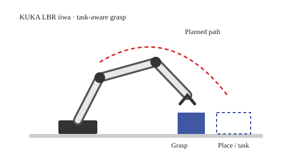
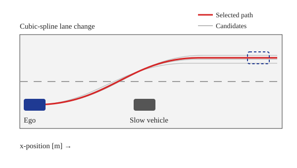
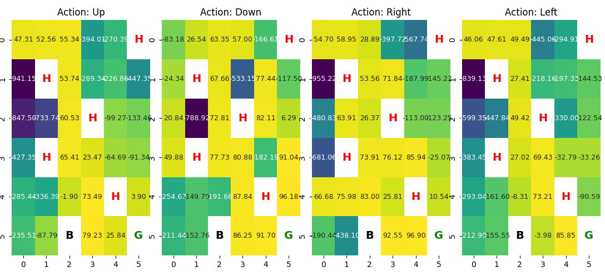

Dhruvil Katharotiya
I am a Master's student in AI Engineering of Autonomous Systems at Technische Hochschule Ingolstadt, Germany, focusing on reinforcement learning, trajectory planning and robot manipulation. My thesis studies task-aware grasp selection and path planning for KUKA LBR iiwa collaborative robots.
I also bring several years of professional software development, and I enjoy turning research ideas into reliable, working systems.

[Details]

[Details]

[Details]